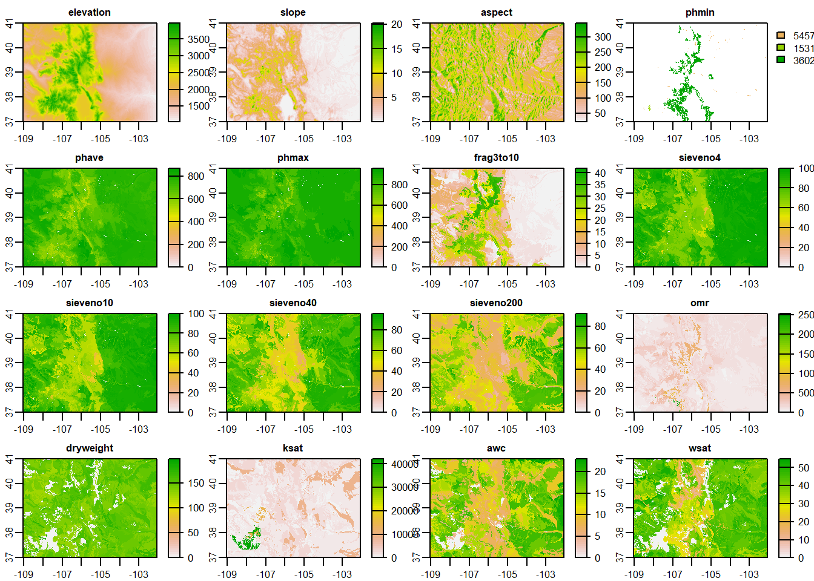
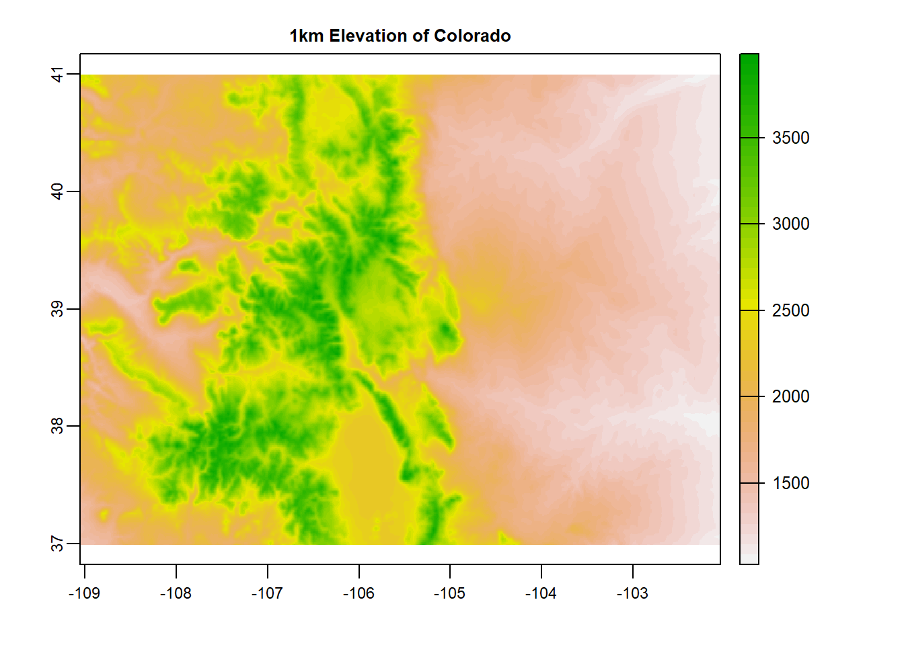
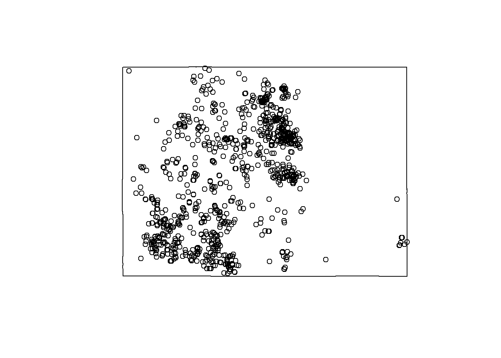
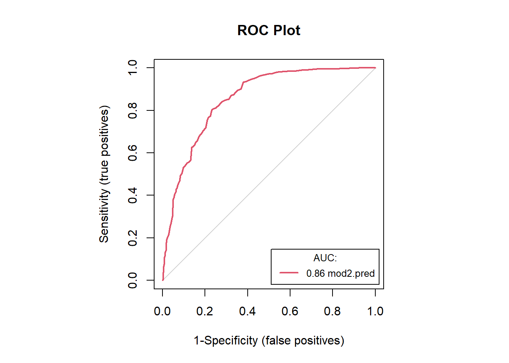
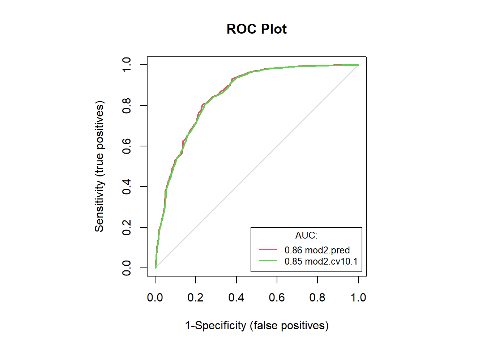
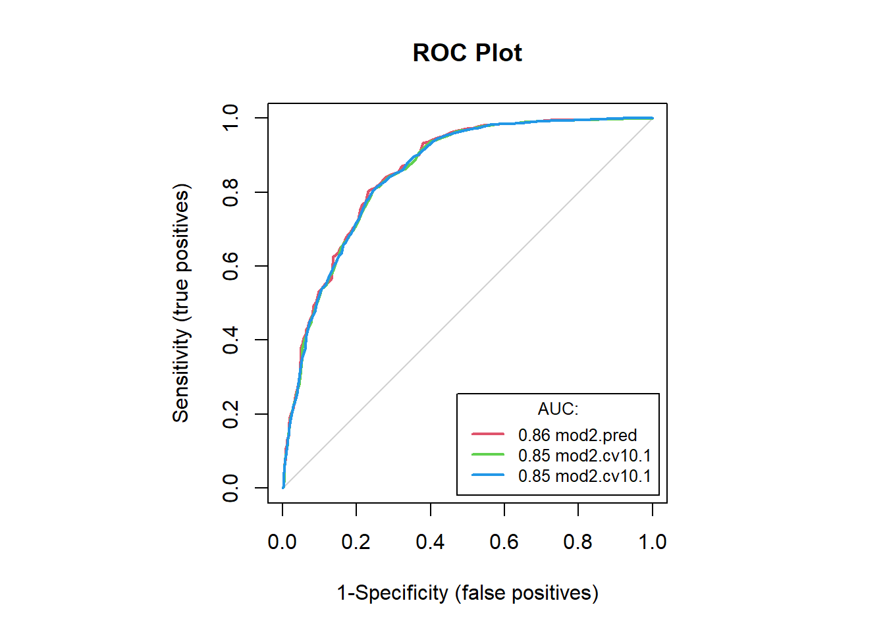
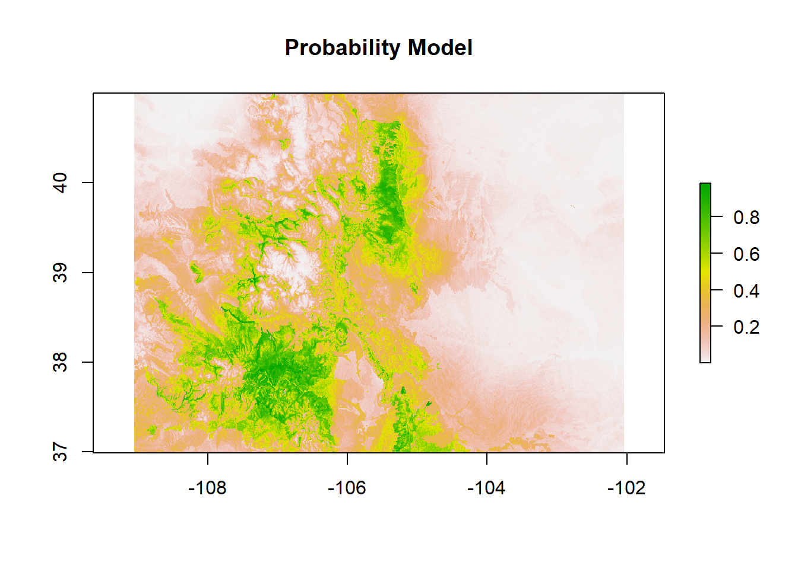
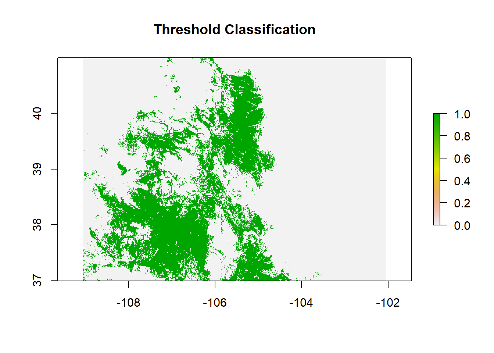
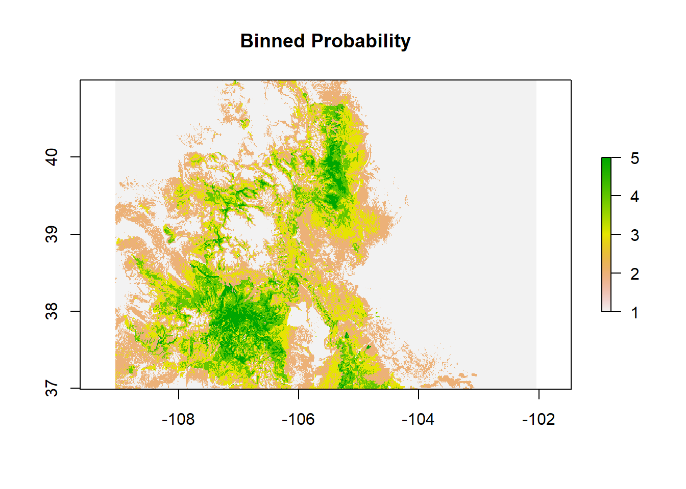

Species Distribution Modeling: Lecture & Coding Guide
Josh Carrell - Utah State University, MS Ecology
Last Update: May 13, 2022
Species Distribution Modeling
Species Distribution Modeling (SDM) is a dense topic. There are so many different algorithms to use and methods for model preparation. You can spend an entire career researching SDM, and many do. Here, we’ll cover SDM flying high at 30,000 feet.
You’ll be able to define SDM, understand it’s importance in ecological and social studies, and be able to create a Generalized Linear Model from this tutorial.
SDM is the process of using species occurrence data (the observed x,y location of an organism) and predictor variables (climate, soils, topography) to predict the spatial distribution of a given species.

Also known as Ecological Niche Modeling, Habitat Suitability Modeling, and range mapping, SDM is a common tool used in conservation biology and bioregional planning.
SDM Specifics
SDM does not provide information on how many species are present in a location (abundance) or if a species is actually even there. SDM outputs are probability representations of habitat that is suitable for a given species.
SDM is a modeling effort to define suitable habitat. The goal of a model is to represent reality. However, all models are inherently “wrong”. They can be useful and be powerful tools in ecology, but it is important to understand SDM has limitations.
Generalized Linear Model
GLM “…can be applied in univariate and multivariate applications, and it is used to estimate an ecological response as a linear combination of independent predictor variables.”

Model Requirements
SDM require predictor variables (x) and a response variable (y).
Predictor Variables
Predictor variables are our explanatory variables. Based on occurrence location (the response variable) the predictor variables help explain and produce a predicted distribution of the species of interest.
For example, let’s say there is a very green plant species that occurs on northern slopes, steep slopes, and at elevations higher than 500m.

Yes, this is a poorly drawn figure in microsoft paint
By using variables in elevation (occurs only above 500m) slope (occurs only on steep slopes) and aspect (occurs only on northern facing slopes) we can get a good idea of where that plant species will occur. However, an algorithm like GLM allows us to include many variables and examine their influence on habitat suitability computationally.
Response Variable (Species Occurrence)
The response variables guides the selection of variable importance in the distribution of a given species. By spatially overlaying the occurrence points of a species on the predictor variables, we can see which values are associated with each occurrence point.
Modeling
Blue Spruce - Picea pungens
Our species of interest for this SDM example will be the state tree of Colorado, the Blue Spruce. Blue spruce is from the spruce family (Picea) and it’s genus (pungens) is latin for “sharp”, “biting, or”piercing”. If you’ve ever come in contact with a blue spruce, you can understand why it would be named pungens. Very sharp needles.
Blue spruce is generally green.. but can look very blue due to a wax that reflects blue light on it’s needles. Blue spruce can be found in the Southern Rockies at 6,000-10,000 feet but is also a commonly planted tree in yards and cities. For example, I have a small blue spruce in my front yard at ~4,600 feet. Seems to be doing just fine..
They also make an excellent Christmas tree.

Gathering Species Data via Spocc
The spocc library is a “programmatic interface to many species occurrence data sources, including GBIF, USGS’s BISON, iNaturalist, Berkeley Ecoinformatics Engine, eBird, iDigBio, VertNet, OBIS, and ALA. Includes functionality for retrieving species occurrence data, and combining that data.”
occ()
The occ() function is where we do all of our species occurrence data gathering.
First up, let’s load the spocc package (install it if this is your first time!) and the sf package as well.
# Load libraries
library(spocc) # data gathering
library(sf)
library(dplyr)
library(PresenceAbsence)
library(DAAG)
library(raster)The first thing the occ() function requires is the binomial nomenclature for the species of interest (Genus species). I tend to place the names within another variable called spp.listA (species list name).
For this tutorial, we will be building models for the state tree of Colorado, the Blue Spruce (Picea pungens).
Assign a variable of your choice to c(“Picea pungens”)
spp.listA = c("Picea pungens") # replace Genus speciesLet’s now use the occ() function query our newly assigned variable by using “query = variable”.
We will also include all the databases that may contain occurrence data for the blue spruce be using from = c(“all the databases”). I’ve included all the databases in the code below.
Lastly, let’s include a max limit on how many occurrences from each database we would like and make sure they have x,y coordinates assigned to them by using:
limit = #, has_coords = T.
Let’s set a limit at 20,000.
Let’s give it a shot below (This may take a while!):
#spp.occ <- occ(query = spp.listA,
# from = c("gbif", "inat", "ecoengine", "vertnet",
# "bison", "ala", "idigbio", "obis"), # This will search #occurrences in these databases
# limit = 20000, has_coords = T) # Requiring data has coordinates#spp.occRAW <- data.frame(occ2df(spp.occ)) # coerce to dataframe
#pander::pander(head(spp.occRAW, 5))
#dim(spp.occRAW)
#pander::pander(table(spp.occRAW$prov)) # examine
# save raw csv
#write.csv(spp.occRAW, file = "D:/NR_6950/data/sdm_PIPU/spp.occRAW.csv")pipu.occRAW <- read.csv("D:/R Textbook Template/NR6950 Notebook/NR 6950 Notebook/Data/sdm_PIPU/spp.occRAW.csv")
pander::pander(head(pipu.occRAW, 5))| X | name | longitude | latitude | prov | date | key |
|---|---|---|---|---|---|---|
| 1 | Picea pungens Engelm. | 10.13 | 48.73 | gbif | 2022-01-01 | 3447324677 |
| 2 | Picea pungens Engelm. | 10.29 | 48.87 | gbif | 2022-01-02 | 3447350370 |
| 3 | Picea pungens Engelm. | 10.29 | 48.88 | gbif | 2022-01-05 | 3447362029 |
| 4 | Picea pungens Engelm. | 10.29 | 48.87 | gbif | 2022-01-02 | 3447371607 |
| 5 | Picea pungens Engelm. | 10.13 | 48.73 | gbif | 2022-01-01 | 3447384677 |
Predictors
Now that we have our species occurrence data (which still needs some further manipulation.. save that for later) let’s load our predictor variables using the terra package.
preds <- terra::rast("D:/R Textbook Template/NR6950 Notebook/NR 6950 Notebook/Data/preds/predictors.tif")
names(preds)## [1] "elevation" "slope" "aspect" "phmin" "phave"
## [6] "phmax" "frag3to10" "sieveno4" "sieveno10" "sieveno40"
## [11] "sieveno200" "omr" "dryweight" "ksat" "awc"
## [16] "wsat" "sand" "silt" "clay" "Bio1"
## [21] "Bio10" "Bio11" "Bio12" "Bio13" "Bio14"
## [26] "Bio15" "Bio16" "Bio17" "Bio18" "Bio19"
## [31] "Bio2" "Bio3" "Bio4" "Bio5" "Bio6"
## [36] "Bio7" "Bio8" "Bio9"terra::plot(preds)
terra::plot(preds$elevation, main = "1km Elevation of Colorado")
Species Occurrence Organization
Let;s organize our presence points and develop a few maps along the way.
# Load species raw data
spec.raw <- pipu.occRAW %>% # Load csv
na.omit(spec.raw) %>% # omit NA values
st_as_sf(., coords = c("longitude","latitude"), crs = 4326)Colorado
states <- sf::st_read("D:/R Textbook Template/NR6950 Notebook/NR 6950 Notebook/Data/sf_datasets/state.shp")## Reading layer `state' from data source
## `D:\R Textbook Template\NR6950 Notebook\NR 6950 Notebook\Data\sf_datasets\state.shp'
## using driver `ESRI Shapefile'
## Simple feature collection with 56 features and 4 fields
## Geometry type: MULTIPOLYGON
## Dimension: XY
## Bounding box: xmin: -179.1686 ymin: -14.59976 xmax: 179.7487 ymax: 71.38961
## Geodetic CRS: WGS 84Colorado <- states %>%
filter(STATE == "Colorado")Species occurrences in Colorado
pipu <- spec.raw
pipu <- sf::st_crop(pipu, Colorado)## Warning: attribute variables are assumed to be spatially constant throughout all
## geometriesplot(Colorado$geometry)
plot(pipu$geometry, add = T) ### Pseudo-absences
SDM often requires the use of species absence points. Just as presence points tell us which values for each predictor variable are useful in modeling a species distribution, absence tells us which values are not important. The use of absence allows us to define the overall habitat suitability of a species.
This is a process known as an x-fold pseudo-absence process. Since we do not have field collected absence points, we generate random points across our modeling domain (the state of colorado). Since these points are random, we are “oversampling”. Meaning, we are doubling the amount of presence points for our absence points due to the off chance that an absence point is a presence point in reality.
set.seed(1111) # change this value for each species!!!!!!!!!
pipu.abs <- st_sample(st_geometry(Colorado), type = "random", size = (nrow(pipu)*2)) %>%
st_sf()
plot(Colorado$geometry)
plot(pipu.abs$geometry, add = T, col = "blue") # plot abs in blue inside buffer
plot(pipu$geometry, add = T, col = "red") # pres on top in red ### Combining Presence and Absence
### Combining Presence and Absence
abs.coords <- st_coordinates(pipu.abs) # coords of absence points
pipu.abs <- cbind(abs.coords, pipu.abs) # bind coords and geometry
pipu.abs$PA <- 0 # add absence 0 in PA column
pipu.abs <- pipu.abs[c(1:2, 4, 3)] # organize columnspres.coords <- sf::st_coordinates(pipu)
head(pres.coords)## X Y
## 1 -106.0545 39.47771
## 2 -106.0581 39.47640
## 3 -106.0524 39.47422
## 4 -106.0528 39.47422
## 5 -106.0495 39.47648
## 6 -105.5342 39.96373head(pipu)## Simple feature collection with 6 features and 5 fields
## Geometry type: POINT
## Dimension: XY
## Bounding box: xmin: -106.0581 ymin: 39.47422 xmax: -105.5342 ymax: 39.96373
## Geodetic CRS: WGS 84
## X name prov date key
## 11 11 Picea pungens Engelm. gbif 2022-01-07 3456150413
## 16 16 Picea pungens Engelm. gbif 2022-01-07 3456561365
## 17 17 Picea pungens Engelm. gbif 2022-01-07 3456585418
## 20 20 Picea pungens Engelm. gbif 2022-01-07 3456899462
## 21 21 Picea pungens Engelm. gbif 2022-01-06 3456992087
## 25 25 Picea pungens Engelm. gbif 2022-01-18 3465993095
## geometry
## 11 POINT (-106.0545 39.47771)
## 16 POINT (-106.0581 39.4764)
## 17 POINT (-106.0524 39.47422)
## 20 POINT (-106.0528 39.47422)
## 21 POINT (-106.0495 39.47648)
## 25 POINT (-105.5342 39.96373)pipu <- cbind(pres.coords, pipu)head(pipu, 5)## Simple feature collection with 5 features and 7 fields
## Geometry type: POINT
## Dimension: XY
## Bounding box: xmin: -106.0581 ymin: 39.47422 xmax: -106.0495 ymax: 39.4777
## Geodetic CRS: WGS 84
## X Y X.1 name prov date key
## 1 -106.0545 39.47771 11 Picea pungens Engelm. gbif 2022-01-07 3456150413
## 2 -106.0581 39.47640 16 Picea pungens Engelm. gbif 2022-01-07 3456561365
## 3 -106.0524 39.47422 17 Picea pungens Engelm. gbif 2022-01-07 3456585418
## 4 -106.0528 39.47422 20 Picea pungens Engelm. gbif 2022-01-07 3456899462
## 5 -106.0495 39.47648 21 Picea pungens Engelm. gbif 2022-01-06 3456992087
## geometry
## 1 POINT (-106.0545 39.47771)
## 2 POINT (-106.0581 39.4764)
## 3 POINT (-106.0524 39.47422)
## 4 POINT (-106.0528 39.47422)
## 5 POINT (-106.0495 39.47648)head(pipu.abs, 5)## Simple feature collection with 5 features and 3 fields
## Geometry type: POINT
## Dimension: XY
## Bounding box: xmin: -108.098 ymin: 37.73881 xmax: -102.6943 ymax: 39.09009
## Geodetic CRS: WGS 84
## X Y PA geometry
## 1 -105.7930 38.76351 0 POINT (-105.793 38.76351)
## 2 -106.1621 38.66006 0 POINT (-106.1621 38.66006)
## 3 -102.6943 38.86826 0 POINT (-102.6943 38.86826)
## 4 -108.0980 39.09009 0 POINT (-108.098 39.09009)
## 5 -103.8747 37.73881 0 POINT (-103.8747 37.73881)pipu$PA <- 1 # give a 1 for presence
names(pipu)## [1] "X" "Y" "X.1" "name" "prov" "date" "key"
## [8] "geometry" "PA"pipu <- pipu[c(1:2, 9, 8)]
# combine pres and abs
pipu.PA <- rbind(pipu, pipu.abs) # combine
table(pipu.PA$PA) # examine PA##
## 0 1
## 5504 2752head(pipu.PA, 5) # examine## Simple feature collection with 5 features and 3 fields
## Geometry type: POINT
## Dimension: XY
## Bounding box: xmin: -106.0581 ymin: 39.47422 xmax: -106.0495 ymax: 39.4777
## Geodetic CRS: WGS 84
## X Y PA geometry
## 1 -106.0545 39.47771 1 POINT (-106.0545 39.47771)
## 2 -106.0581 39.47640 1 POINT (-106.0581 39.4764)
## 3 -106.0524 39.47422 1 POINT (-106.0524 39.47422)
## 4 -106.0528 39.47422 1 POINT (-106.0528 39.47422)
## 5 -106.0495 39.47648 1 POINT (-106.0495 39.47648)Train your data
Data training is needed for predictive modeling. Here we are simply extracting the value of each predictor variable to each species absence and presence point.
names(preds)## [1] "elevation" "slope" "aspect" "phmin" "phave"
## [6] "phmax" "frag3to10" "sieveno4" "sieveno10" "sieveno40"
## [11] "sieveno200" "omr" "dryweight" "ksat" "awc"
## [16] "wsat" "sand" "silt" "clay" "Bio1"
## [21] "Bio10" "Bio11" "Bio12" "Bio13" "Bio14"
## [26] "Bio15" "Bio16" "Bio17" "Bio18" "Bio19"
## [31] "Bio2" "Bio3" "Bio4" "Bio5" "Bio6"
## [36] "Bio7" "Bio8" "Bio9"# Load species presence
pipu.PA## Simple feature collection with 8256 features and 3 fields
## Geometry type: POINT
## Dimension: XY
## Bounding box: xmin: -109.0497 ymin: 36.9951 xmax: -102.0435 ymax: 41.0007
## Geodetic CRS: WGS 84
## First 10 features:
## X Y PA geometry
## 1 -106.0545 39.47771 1 POINT (-106.0545 39.47771)
## 2 -106.0581 39.47640 1 POINT (-106.0581 39.4764)
## 3 -106.0524 39.47422 1 POINT (-106.0524 39.47422)
## 4 -106.0528 39.47422 1 POINT (-106.0528 39.47422)
## 5 -106.0495 39.47648 1 POINT (-106.0495 39.47648)
## 6 -105.5342 39.96373 1 POINT (-105.5342 39.96373)
## 7 -105.3920 39.85861 1 POINT (-105.392 39.85861)
## 8 -105.2246 39.99697 1 POINT (-105.2246 39.99697)
## 9 -106.0409 39.64048 1 POINT (-106.0409 39.64048)
## 10 -105.1235 39.83482 1 POINT (-105.1235 39.83482)# extract predictors to species presence
#PIAR.pres.fnetSF <- sf::st_crop(PIAR.pres.fnetSF, sky$geometry)
#PIAR.presPA.SF <- sf::st_crop(PIAR.presabs, sky$geometry)
spec.pres.sv <- as(pipu.PA, "SpatVector") # presence must be spatvector
spec.pres.extract <- terra::extract(preds, spec.pres.sv) # perform extraction of preds to presence
spec.trained.data <- cbind(spec.pres.extract, pipu.PA) # combine true pres, fnetids, and extracted preds
head(spec.trained.data) # check## ID elevation slope aspect phmin phave phmax frag3to10 sieveno4 sieveno10
## 1 1 3044.223 5.370624 126.7778 <NA> 613 780 21 76 70
## 2 2 3044.223 5.370624 126.7778 <NA> 613 780 21 76 70
## 3 3 3071.927 6.000525 112.4125 <NA> 613 780 21 76 70
## 4 4 3071.927 6.000525 112.4125 <NA> 613 780 21 76 70
## 5 5 3033.152 4.774728 180.4395 <NA> 613 780 21 76 70
## 6 6 2681.013 5.298944 113.5942 <NA> 614 780 20 61 56
## sieveno40 sieveno200 omr dryweight ksat awc wsat sand silt clay Bio1 Bio10
## 1 52 38 609 152 2822 9 31 53 26 22 0.35 10.25
## 2 52 38 609 152 2822 9 31 53 26 22 0.35 10.25
## 3 52 38 609 152 2822 9 31 53 26 22 0.15 10.15
## 4 52 38 609 152 2822 9 31 53 26 22 0.15 10.15
## 5 52 38 609 152 2822 9 31 53 26 22 0.65 10.55
## 6 38 25 61 135 917 14 39 59 23 18 2.65 12.95
## Bio11 Bio12 Bio13 Bio14 Bio15 Bio16 Bio17 Bio18 Bio19 Bio2 Bio3 Bio4 Bio5
## 1 -9.05 654.6 81.4 39.1 25.4 214.1 124.0 204.7 124.0 13.1 37.8 759.5 19.05
## 2 -9.05 654.6 81.4 39.1 25.4 214.1 124.0 204.7 124.0 13.1 37.8 759.5 19.05
## 3 -9.25 677.8 84.9 40.2 25.7 222.9 127.8 213.0 127.8 13.1 37.8 761.2 18.95
## 4 -9.25 677.8 84.9 40.2 25.7 222.9 127.8 213.0 127.8 13.1 37.8 761.2 18.95
## 5 -8.75 614.1 76.5 36.4 25.6 200.9 115.7 192.4 115.7 13.1 37.9 758.3 19.25
## 6 -6.85 615.0 75.1 25.3 34.4 207.0 85.6 194.4 85.6 13.1 38.3 775.4 21.55
## Bio6 Bio7 Bio8 Bio9 X Y PA geometry
## 1 -15.55 34.6 9.95 -9.05 -106.0545 39.47771 1 POINT (-106.0545 39.47771)
## 2 -15.55 34.6 9.95 -9.05 -106.0581 39.47640 1 POINT (-106.0581 39.4764)
## 3 -15.75 34.7 9.75 -9.25 -106.0524 39.47422 1 POINT (-106.0524 39.47422)
## 4 -15.75 34.7 9.75 -9.25 -106.0528 39.47422 1 POINT (-106.0528 39.47422)
## 5 -15.25 34.5 10.15 -8.75 -106.0495 39.47648 1 POINT (-106.0495 39.47648)
## 6 -12.65 34.2 1.25 -6.85 -105.5342 39.96373 1 POINT (-105.5342 39.96373)spec.trained.data.max <- na.exclude(spec.trained.data)
# organize
names(spec.trained.data)## [1] "ID" "elevation" "slope" "aspect" "phmin"
## [6] "phave" "phmax" "frag3to10" "sieveno4" "sieveno10"
## [11] "sieveno40" "sieveno200" "omr" "dryweight" "ksat"
## [16] "awc" "wsat" "sand" "silt" "clay"
## [21] "Bio1" "Bio10" "Bio11" "Bio12" "Bio13"
## [26] "Bio14" "Bio15" "Bio16" "Bio17" "Bio18"
## [31] "Bio19" "Bio2" "Bio3" "Bio4" "Bio5"
## [36] "Bio6" "Bio7" "Bio8" "Bio9" "X"
## [41] "Y" "PA" "geometry"spec.trained.data <- spec.trained.data[c(42, 2:4, 6:39)]Generalized Linear Modeling
Assign predictors
# mod.LR pathway
#path.LR <- "F:/Josh/Plants/spp/Mods/Mod.LR"
#setwd(path.LR)
#load("F:/Josh/Plants/spp/frames/bbox/spp.bbox.RDATA", verbose = T)
# Load preds
spp.preds <- preds
# load presabs trained data
#load("F:/Josh/Plants/spp/trained_data/spp.mod.vars.RData", verbose = T)
dat1 <- spec.trained.data; dim(dat1); table(dat1$PA); head(dat1, 2) # examine data## [1] 8256 38##
## 0 1
## 5504 2752## PA elevation slope aspect phave phmax frag3to10 sieveno4 sieveno10
## 1 1 3044.223 5.370624 126.7778 613 780 21 76 70
## 2 1 3044.223 5.370624 126.7778 613 780 21 76 70
## sieveno40 sieveno200 omr dryweight ksat awc wsat sand silt clay Bio1 Bio10
## 1 52 38 609 152 2822 9 31 53 26 22 0.35 10.25
## 2 52 38 609 152 2822 9 31 53 26 22 0.35 10.25
## Bio11 Bio12 Bio13 Bio14 Bio15 Bio16 Bio17 Bio18 Bio19 Bio2 Bio3 Bio4 Bio5
## 1 -9.05 654.6 81.4 39.1 25.4 214.1 124 204.7 124 13.1 37.8 759.5 19.05
## 2 -9.05 654.6 81.4 39.1 25.4 214.1 124 204.7 124 13.1 37.8 759.5 19.05
## Bio6 Bio7 Bio8 Bio9
## 1 -15.55 34.6 9.95 -9.05
## 2 -15.55 34.6 9.95 -9.05dat1 <- na.omit(dat1)Model formula setup
# GLM Model Formula
mod.form <- function(dat, r.col, p.col){
n.col <- ncol(dat) # Number of columns in the dataframe
resp <- colnames(dat[r.col]) # assign response a column name
pred <- colnames(dat[c(p.col:n.col)]) # assign preds column names
mod.formula <- as.formula(paste(resp,
"~", paste(pred, collapse = "+"))) # formula
}names(spec.trained.data) # names of predictors## [1] "PA" "elevation" "slope" "aspect" "phave"
## [6] "phmax" "frag3to10" "sieveno4" "sieveno10" "sieveno40"
## [11] "sieveno200" "omr" "dryweight" "ksat" "awc"
## [16] "wsat" "sand" "silt" "clay" "Bio1"
## [21] "Bio10" "Bio11" "Bio12" "Bio13" "Bio14"
## [26] "Bio15" "Bio16" "Bio17" "Bio18" "Bio19"
## [31] "Bio2" "Bio3" "Bio4" "Bio5" "Bio6"
## [36] "Bio7" "Bio8" "Bio9"# Basic GLM with link = Binomial, dataframe = dat1
mod1.LR <- glm(as.factor(PA) ~ elevation + slope + aspect +
phave + phmax + frag3to10 + sieveno4 +
sieveno10 + sieveno40 + sieveno200 +
omr + dryweight + ksat + awc + wsat + sand + silt + clay +
Bio1 + Bio2 + Bio3 + Bio4 + Bio5 + Bio6 + Bio7 + Bio8 +
Bio9 + Bio10 + Bio11 + Bio12 + Bio13 + Bio14 + Bio15 + Bio16 + Bio17 +
Bio18 + Bio19,
family = binomial, data = dat1)
# save mod1.LR
#save(mod1.LR, file = "F:/Josh/Plants/spp/Mods/Mod.LR/mod1.LR.RData")
# LR model 1 summary
summary(mod1.LR) ##
## Call:
## glm(formula = as.factor(PA) ~ elevation + slope + aspect + phave +
## phmax + frag3to10 + sieveno4 + sieveno10 + sieveno40 + sieveno200 +
## omr + dryweight + ksat + awc + wsat + sand + silt + clay +
## Bio1 + Bio2 + Bio3 + Bio4 + Bio5 + Bio6 + Bio7 + Bio8 + Bio9 +
## Bio10 + Bio11 + Bio12 + Bio13 + Bio14 + Bio15 + Bio16 + Bio17 +
## Bio18 + Bio19, family = binomial, data = dat1)
##
## Deviance Residuals:
## Min 1Q Median 3Q Max
## -2.6104 -0.7104 -0.2266 0.7701 2.9106
##
## Coefficients:
## Estimate Std. Error z value Pr(>|z|)
## (Intercept) 4.836e+01 7.749e+00 6.241 4.36e-10 ***
## elevation 1.958e-03 3.112e-04 6.291 3.15e-10 ***
## slope -8.843e-02 1.598e-02 -5.534 3.13e-08 ***
## aspect 1.028e-03 5.292e-04 1.942 0.052109 .
## phave -1.375e-02 1.208e-03 -11.383 < 2e-16 ***
## phmax 7.785e-04 1.006e-03 0.774 0.439089
## frag3to10 1.979e-02 5.491e-03 3.605 0.000312 ***
## sieveno4 2.184e-02 1.836e-02 1.190 0.234212
## sieveno10 -2.889e-02 2.399e-02 -1.204 0.228592
## sieveno40 -1.163e-02 1.613e-02 -0.721 0.470867
## sieveno200 -6.240e-03 1.536e-02 -0.406 0.684641
## omr -7.868e-05 1.994e-04 -0.395 0.693126
## dryweight -3.017e-03 1.161e-03 -2.599 0.009354 **
## ksat -1.051e-05 5.768e-06 -1.822 0.068503 .
## awc 4.764e-03 1.104e-02 0.432 0.665988
## wsat 1.216e-02 4.739e-03 2.567 0.010273 *
## sand 9.366e-02 1.131e-02 8.280 < 2e-16 ***
## silt 1.161e-01 1.358e-02 8.550 < 2e-16 ***
## clay 1.308e-01 1.438e-02 9.096 < 2e-16 ***
## Bio1 6.502e-01 3.720e-01 1.748 0.080479 .
## Bio2 3.585e+00 5.567e-01 6.440 1.20e-10 ***
## Bio3 -1.097e+00 2.039e-01 -5.378 7.52e-08 ***
## Bio4 3.314e-03 1.510e-02 0.219 0.826301
## Bio5 8.986e+04 2.358e+04 3.811 0.000138 ***
## Bio6 -8.986e+04 2.358e+04 -3.811 0.000138 ***
## Bio7 -8.986e+04 2.358e+04 -3.811 0.000138 ***
## Bio8 -3.772e-02 1.272e-02 -2.965 0.003024 **
## Bio9 -2.654e-02 7.620e-03 -3.483 0.000495 ***
## Bio10 7.382e-01 6.951e-01 1.062 0.288249
## Bio11 4.669e-01 5.543e-01 0.842 0.399686
## Bio12 9.452e-03 1.909e-03 4.951 7.37e-07 ***
## Bio13 5.310e-02 1.138e-02 4.665 3.09e-06 ***
## Bio14 6.467e-02 1.747e-02 3.702 0.000214 ***
## Bio15 -8.960e-02 7.996e-03 -11.205 < 2e-16 ***
## Bio16 2.267e-02 6.404e-03 3.539 0.000401 ***
## Bio17 -6.064e-02 8.022e-03 -7.560 4.04e-14 ***
## Bio18 -4.888e-02 3.870e-03 -12.630 < 2e-16 ***
## Bio19 -1.904e-02 4.211e-03 -4.522 6.13e-06 ***
## ---
## Signif. codes: 0 '***' 0.001 '**' 0.01 '*' 0.05 '.' 0.1 ' ' 1
##
## (Dispersion parameter for binomial family taken to be 1)
##
## Null deviance: 10507.7 on 8252 degrees of freedom
## Residual deviance: 7191.9 on 8215 degrees of freedom
## AIC: 7267.9
##
## Number of Fisher Scoring iterations: 6# model 1 fit
mod1.fit <- 100 * (1 - mod1.LR$deviance/mod1.LR$null.deviance) # model fit
mod1.fit # examine## [1] 31.55593mod1.pred <- predict(mod1.LR, type = "response") # model prediction
#save(mod1.pred, file = "F:/Josh/Plants/spp/Mods/Mod.LR/mod1.pred.LR.RData")
# model 1 prediction
head(mod1.pred) # examine prediction## 1 2 3 4 5 6
## 0.6800632 0.6800632 0.5902088 0.5902088 0.7519550 0.8730205Modeling Metrics
# LR model 2; backwards stepwise variable reduction
mod2.LR <- step(mod1.LR, trace = F)
# save mod2.LR
#save(mod2.LR, file = "F:/Josh/Plants/spp/Mods/Mod.LR/mod2.LR.RData")
# model 2 fit
100 * (1 - mod2.LR$deviance/mod2.LR$null.deviance)## [1] 31.52939# model 1 fit
100 * (1 - mod1.LR$deviance/mod1.LR$null.deviance)## [1] 31.55593# model 2 prediction
mod2.pred <- predict(mod2.LR, type = "response")
#save(mod2.pred, file = "F:/Josh/Plants/spp/Mods/Mod.LR/mod2.pred.LR.RData")
# examine model predictions
head(mod2.pred) # model 2## 1 2 3 4 5 6
## 0.6726104 0.6726104 0.5838496 0.5838496 0.7468869 0.8643118head(mod1.pred) # model 1## 1 2 3 4 5 6
## 0.6800632 0.6800632 0.5902088 0.5902088 0.7519550 0.8730205# model 2 summary
summary(mod2.LR)##
## Call:
## glm(formula = as.factor(PA) ~ elevation + slope + aspect + phave +
## frag3to10 + sieveno4 + sieveno10 + dryweight + ksat + wsat +
## sand + silt + clay + Bio1 + Bio2 + Bio3 + Bio5 + Bio6 + Bio7 +
## Bio8 + Bio9 + Bio10 + Bio11 + Bio12 + Bio13 + Bio14 + Bio15 +
## Bio16 + Bio17 + Bio18 + Bio19, family = binomial, data = dat1)
##
## Deviance Residuals:
## Min 1Q Median 3Q Max
## -2.6388 -0.7088 -0.2256 0.7640 2.8906
##
## Coefficients:
## Estimate Std. Error z value Pr(>|z|)
## (Intercept) 4.795e+01 7.682e+00 6.242 4.31e-10 ***
## elevation 1.910e-03 3.042e-04 6.277 3.44e-10 ***
## slope -9.066e-02 1.581e-02 -5.736 9.70e-09 ***
## aspect 1.089e-03 5.223e-04 2.084 0.037120 *
## phave -1.305e-02 9.033e-04 -14.446 < 2e-16 ***
## frag3to10 2.180e-02 5.266e-03 4.140 3.48e-05 ***
## sieveno4 2.873e-02 1.695e-02 1.695 0.090131 .
## sieveno10 -4.825e-02 1.565e-02 -3.084 0.002045 **
## dryweight -3.426e-03 1.082e-03 -3.167 0.001543 **
## ksat -1.090e-05 4.835e-06 -2.254 0.024165 *
## wsat 1.445e-02 4.088e-03 3.534 0.000410 ***
## sand 9.751e-02 1.003e-02 9.722 < 2e-16 ***
## silt 1.110e-01 1.115e-02 9.950 < 2e-16 ***
## clay 1.256e-01 1.201e-02 10.464 < 2e-16 ***
## Bio1 5.770e-01 3.509e-01 1.644 0.100112
## Bio2 3.535e+00 5.507e-01 6.419 1.37e-10 ***
## Bio3 -1.072e+00 2.014e-01 -5.323 1.02e-07 ***
## Bio5 9.156e+04 2.347e+04 3.902 9.54e-05 ***
## Bio6 -9.156e+04 2.347e+04 -3.902 9.54e-05 ***
## Bio7 -9.156e+04 2.347e+04 -3.902 9.54e-05 ***
## Bio8 -3.744e-02 1.270e-02 -2.948 0.003194 **
## Bio9 -2.617e-02 7.458e-03 -3.508 0.000451 ***
## Bio10 9.175e-01 2.780e-01 3.300 0.000965 ***
## Bio11 3.866e-01 2.294e-01 1.685 0.091975 .
## Bio12 9.711e-03 1.894e-03 5.127 2.95e-07 ***
## Bio13 5.239e-02 1.094e-02 4.790 1.67e-06 ***
## Bio14 6.673e-02 1.734e-02 3.849 0.000119 ***
## Bio15 -8.841e-02 7.771e-03 -11.377 < 2e-16 ***
## Bio16 2.170e-02 6.251e-03 3.471 0.000518 ***
## Bio17 -6.162e-02 7.961e-03 -7.741 9.88e-15 ***
## Bio18 -4.832e-02 3.754e-03 -12.873 < 2e-16 ***
## Bio19 -1.867e-02 4.191e-03 -4.454 8.43e-06 ***
## ---
## Signif. codes: 0 '***' 0.001 '**' 0.01 '*' 0.05 '.' 0.1 ' ' 1
##
## (Dispersion parameter for binomial family taken to be 1)
##
## Null deviance: 10507.7 on 8252 degrees of freedom
## Residual deviance: 7194.7 on 8221 degrees of freedom
## AIC: 7258.7
##
## Number of Fisher Scoring iterations: 6# add var to keep track of model
modl <- "mod2.LR"
dat2 <- cbind(modl, dat1[1], mod2.pred) # build prediction df with mod2 preds
# Create confusion matrix
mod.cut <- optimal.thresholds(dat2, opt.methods = c("MaxKappa"))
mod2.cfmat <- table(dat2[[2]],
factor(as.numeric(dat2$mod2.pred >= mod.cut$mod2.pred)))
mod2.cfmat # examine confusion matrix##
## 0 1
## 0 4230 1271
## 1 544 2208#save(mod.cut, file = "F:/Josh/Plants/spp/ Mods/Mod.LR/mod.cut.LR.RData") # save mod.cut
#save(mod2.cfmat, file = "F:/Josh/Plants/spp/ Mods/Mod.LR/mod2.cfmat.LR.RData")
# Model accuracies
mod2.acc <- presence.absence.accuracy(dat2,
threshold = mod.cut$mod2.pred,
st.dev = F)
tss <- mod2.acc$sensitivity + mod2.acc$specificity - 1
mod2.acc <- cbind(mod2.acc[1:7], tss) # bind metrics
mod2.acc[c(1, 4:5, 7:8)] # examine accuracies## model sensitivity specificity AUC tss
## 1 mod2.pred 0.8023256 0.7689511 0.8574226 0.5712767#save(mod2.acc, file = "F:/Josh/Plants/spp/Mods/Mod.LR/mod2.acc.LR.RData")
#windows(22,12)
auc.roc.plot(dat2, color = T)
#savePlot("auc.roc.plot.LR.jpeg", type = "jpeg")
#dev.off()
# Cross validation accuracies
mod2.cv10 <- CVbinary(mod2.LR, nfolds = 5, print.details = F) # crossval
ls(mod2.cv10)## [1] "acc.cv" "acc.internal" "acc.training" "cvhat" "internal"
## [6] "training"mod2.cv10.1 <- mod2.cv10$cvhat
#save(mod2.cv10, file = "F:/Josh/Plants/spp/Mods/Mod.LR/mod2.cv10.RData")
dat2 <- cbind(dat2, mod2.cv10.1)
head(dat2)## modl PA mod2.pred mod2.cv10.1
## 1 mod2.LR 1 0.6726104 0.6560960
## 2 mod2.LR 1 0.6726104 0.6515394
## 3 mod2.LR 1 0.5838496 0.5672087
## 4 mod2.LR 1 0.5838496 0.6103093
## 5 mod2.LR 1 0.7468869 0.7508339
## 6 mod2.LR 1 0.8643118 0.8533845#save(dat2, file = "F:/Josh/Plants/spp/Mods/Mod.LR/mod.predictionframe.RData")
# model CVbinary
mod2.cfmatCV <- table(dat2[[2]],
factor(as.numeric(dat2$mod2.cv10.1 >= mod.cut$mod2.pred)))
# examine both mod confusion matrices
mod2.cfmatCV; mod2.cfmat##
## 0 1
## 0 4213 1288
## 1 596 2156##
## 0 1
## 0 4230 1271
## 1 544 2208#save(mod2.cfmatCV, file = "F:/Josh/Plants/spp/Mods/Mod.LR/mod2.cfmatCV.RData")
# calculate accuracies with std.dev = F
mod2.accB <- presence.absence.accuracy(dat2,
threshold = mod.cut$mod2.pred,
st.dev = F)
tss <- mod2.accB$sensitivity + mod2.accB$specificity - 1 # code TSS metric
mod2.accB <- cbind(mod2.accB[1:7], tss) # bind all metrics
mod2.accB[c(1, 4:5, 7:8)] # examine accuracies## model sensitivity specificity AUC tss
## 1 mod2.pred 0.8023256 0.7689511 0.8574226 0.5712767
## 2 mod2.cv10.1 0.7834302 0.7658608 0.8535553 0.5492910#save(mod2.accB, file = "F:/Josh/Plants/spp/Mods/Mod.LR/mod2.accB.RData")#save(mod2.acc, file = "F:/Josh/Plants/spp/Mods/Mod.LR/mod2.acc.LR.RData")
auc.roc.plot(dat2, color = T)
#savePlot("auc.roc.plot.LR.jpeg", type = "jpeg")
dev.off()## null device
## 1# Cross validation accuracies
mod2.cv10 <- CVbinary(mod2.LR, nfolds = 5, print.details = F) # crossval
ls(mod2.cv10)## [1] "acc.cv" "acc.internal" "acc.training" "cvhat" "internal"
## [6] "training"mod2.cv10.1 <- mod2.cv10$cvhat
#save(mod2.cv10, file = "F:/Josh/Plants/spp/Mods/Mod.LR/mod2.cv10.RData")
dat2 <- cbind(dat2, mod2.cv10.1)
head(dat2)## modl PA mod2.pred mod2.cv10.1 mod2.cv10.1
## 1 mod2.LR 1 0.6726104 0.6560960 0.6635340
## 2 mod2.LR 1 0.6726104 0.6515394 0.6635340
## 3 mod2.LR 1 0.5838496 0.5672087 0.6049995
## 4 mod2.LR 1 0.5838496 0.6103093 0.5684916
## 5 mod2.LR 1 0.7468869 0.7508339 0.7382543
## 6 mod2.LR 1 0.8643118 0.8533845 0.8485746#save(dat2, file = "F:/Josh/Plants/spp/Mods/Mod.LR/mod.predictionframe.RData")
# model CVbinary
mod2.cfmatCV <- table(dat2[[2]],
factor(as.numeric(dat2$mod2.cv10.1 >= mod.cut$mod2.pred)))
# examine both mod confusion matrices
mod2.cfmatCV; mod2.cfmat##
## 0 1
## 0 4213 1288
## 1 596 2156##
## 0 1
## 0 4230 1271
## 1 544 2208#save(mod2.cfmatCV, file = "F:/Josh/Plants/spp/Mods/Mod.LR/mod2.cfmatCV.RData")# calculate accuracies with std.dev = F
mod2.accB <- presence.absence.accuracy(dat2,
threshold = mod.cut$mod2.pred,
st.dev = F)
tss <- mod2.accB$sensitivity + mod2.accB$specificity - 1 # code TSS metric
mod2.accB <- cbind(mod2.accB[1:7], tss) # bind all metrics
mod2.accB[c(1, 4:5, 7:8)] # examine accuracies## model sensitivity specificity AUC tss
## 1 mod2.pred 0.8023256 0.7689511 0.8574226 0.5712767
## 2 mod2.cv10.1 0.7834302 0.7658608 0.8535553 0.5492910
## 3 mod2.cv10.1.1 0.7856105 0.7665879 0.8539678 0.5521984#save(mod2.accB, file = "F:/Josh/Plants/spp/Mods/Mod.LR/mod2.accB.RData")# view both cfmats in same AUC plot
#windows(22,12)
auc.roc.plot(dat2, color = T)
#savePlot("auc.roc.plot.LR.BOTH.jpeg", type = "jpeg")Modeling Ouputs
Probability Model
# spatial probability prediction
spp.predsR <- as(preds, "Raster")
modFprob.LR.1 <- predict(spp.predsR, mod1.LR, filename = "mod2.LRprob.tif",
type = "response", fun = predict,
index = 2, overwrite = T)CLassified on Model Threshold
# classified prediction
modFprobclas.R=reclassify(modFprob.LR.1,c(0,mod.cut[[2]],0,mod.cut[[2]],1,1))Classified Model Probability
modFprobclas.bin.R <- reclassify(modFprob.LR.1,c(0,.2,1,
.2,.4,2,
.4,.6,3,
.6,.8,4,
0.8,1,5))Plot
plot(modFprob.LR.1, main = "Probability Model")
plot(modFprobclas.R, main = "Threshold Classification")
plot(modFprobclas.bin.R, main = "Binned Probability")